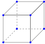
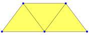
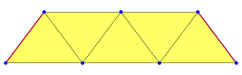
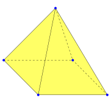
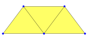
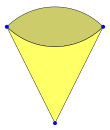

[MathJax on]
1 Getting started
To use this package, it has to be loaded into GAP via
gap> LoadPackage("SimplicialSurfaces");
true
1.1 What can it do?
The SimplicialSurface-package contains the following basic functionality:
It allows computations with simplicial surfaces (and generalisations of them like polygonal complexes, compare section 2), for example:

Instead of working with an embedding of these structures, we see them as abstract surfaces and represent them by their incidence geometry (for more details see section 2.1).
It can work with edge colourings of simplicial surfaces (in general and for the purpose of an embedding).
The remainder of this chapter is a measured introduction into the main data structure of the package and some simple capabilities. Chapter 2 contains the formal definitions of these concepts. Chapter 6 contains some more advanced usage examples.
1.2 Playing with simplicial surfaces
Since the platonic solids are pre-defined in the SimplicialSurfaces-package we use them to show a few capabilities of this package. We will use the cube as an example.

We can compute elementary properties of the surface
gap> NumberOfVertices(surface);
8
gap> NumberOfEdges(surface);
12
gap> NumberOfFaces(surface);
6
gap> EulerCharacteristic(surface);
2
and we can show that the surface is homeomorphic to a sphere by verifying that it is closed, connected and orientable.
gap> IsClosedSurface(surface);
true
gap> IsConnectedSurface(surface);
true
gap> IsOrientableSurface(surface);
true
We can also compute more complicated properties like the automorphism group and check for isomorphisms between surfaces.
1.3 Constructing new surfaces
In most cases one is not interested in the properties of platonic solids (usually one already knows a lot about them). Therefore we need a way to tell the package about the surfaces we are interested in. As a test case we consider a surface of three triangles that are connected by edges, like this:

Disregarding lengths and angles, we can describe this surface quite easily by labelling its faces and vertices. In our case each triangle is determined by its three vertices.
For example the face I consists of the vertices [1, 2, 3] and the face III has the vertices [3, 4, 5]. To encode the incidence structure of this surface it is sufficient to know which vertices lie in which faces. We can encode this information as a list with three entries (one for each face). The list entry at position p is a list of all vertices that are incident to the face with number p (their order is not important). In our example this looks like this:
gap> verticesOfFaces := [ [1,2,3], [2,3,4], [3,5,4] ];
[ [ 1, 2, 3 ], [ 2, 3, 4 ], [ 3, 5, 4 ] ]
From this information we can construct a simplicial surface
gap> surf := SimplicialSurfaceByVerticesInFaces( verticesOfFaces );;
that retains this information (note that the order of the incident lists can change (here for [3, 5, 4]) as they are internally converted into sets):
gap> VerticesOfFaces(surf);
[ [ 1, 2, 3 ], [ 2, 3, 4 ], [ 3, 4, 5 ] ]
A slightly more complicated example is a Möbius-strip.

In this case the left-most and right-most edges are identified.
gap> moebius := SimplicialSurfaceByVerticesInFaces(
> [[1,2,3],[2,3,4],[3,4,5],[4,5,1],[5,2,1]]);;
gap> IsOrientableSurface(moebius);
false
1.3-1 Creating non-triangular faces
If we want to construct surfaces with non-triangular faces, we have to use the method PolygonalSurfaceByVerticesInFaces. We also have to be more careful since this method is a bit more subtle. We consider the example of a pyramid with a square base.

To encode this surface we have to enumerate the faces. But if we try to input the surface
gap> pyr := PolygonalSurfaceByVerticesInFaces(
> [[2,3,4,5], [1,2,3], [1,3,5], [1,5,4],[1,2,4]] );;
we notice something strange: The resulting surface has the wrong number of edges (10 instead of 8) and is not closed.
gap> NumberOfEdges(pyr);
10
gap> IsClosedSurface(pyr);
false
Since this seems strange it would be natural to check the edges. For that the method VerticesOfEdges (which will be explained in more detail in section 1.5) can be used. It shows for each edge its incident vertices.
gap> VerticesOfEdges(pyr);
[ [ 1, 2 ], [ 1, 3 ], [ 1, 4 ], [ 1, 5 ], [ 2, 3 ], [ 2, 4 ],
[ 2, 5 ], [ 3, 4 ], [ 3, 5 ], [ 4, 5 ] ]
This shows that in addition to the expected edges we also have the edges [ 2, 5 ] and [ 3, 4 ]. How did those edges get added?
The problem is: We did not tell the method PolygonalSurfaceByVerticesInFaces what the edges should be. For triangular faces this is not an issue because there is an edge between any pair of vertices. But for the square face in our example the vertices do not determine its edges.
The method PolygonalSurfaceByVerticesInFaces will believe that two adjacent vertices in the given list are also connected by an edge of the face. Above, we gave the list [2, 3, 4, 5] for the square. If we compare it with our picture we can see that the vertices 2 and 4 are connected in the picture but not adjacent in our list. Likewise the vertices 2 and 5 are adjacent in the list (we imagine that the list wraps around) but don't have an edge between them in the picture.
Instead we have to give the vertices in a proper cyclic ordering:
gap> pyr :=PolygonalSurfaceByVerticesInFaces(
> [[2,3,5,4], [1,2,3], [1,3,5], [1,5,4],[1,2,4]] );;
gap> NumberOfEdges(pyr);
8
gap> IsClosedSurface(pyr);
true
1.4 Playing with vertices and faces.
After having learned how to construct a simplicial surface by the method SimplicialSurfaceByVerticesInFaces, we can use the labelling of vertices and faces to get more detailed information about the surface. We will use the example from section 1.3:

gap> surf := SimplicialSurfaceByVerticesInFaces( [[1,2,3],[2,3,4],[3,4,5]] );;
It is easy to reclaim the complete incidence structure that went into the construction.
gap> Vertices(surf);
[ 1, 2, 3, 4, 5 ]
gap> Faces(surf);
[ 1 .. 3 ]
gap> VerticesOfFaces(surf);
[ [ 1, 2, 3 ], [ 2, 3, 4 ], [ 3, 4, 5 ] ]
By using the incidence-structure we can distinguish vertices that lie in a different number of faces.
gap> FaceDegreesOfVertices(surf);
[ 1, 2, 3, 2, 1]
The first entry of this list counts the number of faces that are incident to the vertex 1 (in general the i-th entry counts those for the vertex i).
In this case it is apparent that the third vertex is incident to three different faces and unique with that property. To distinguish vertices 1 and 5 (that are incident to one face each), we need to know which faces they are incident to.
gap> FacesOfVertices(surf);
[ [ 1 ], [ 1, 2 ], [ 1, 2, 3 ], [ 2, 3 ], [ 3 ] ]
So the first vertex is incident to the face 1 and the fifth vertex is incident to face 3. We can also see that the second vertex is incident to the faces 1 and 2.
An additional advantage of the incidental information is that we can determine a concrete global orientation if the surface is orientable. From the method Orientation (8.7-2) we can compute a list of permutations such that the i-th entry is a cyclic permutation of the vertices in face i.
gap> List( Orientation(surf), VerticesAsPerm );
[ (1,2,3), (2,4,3), (3,4,5) ]
1.5 Adding edge numbering
Up until now we did not care about specific edges because they were not important for the construction of our examples so far. But let us assume that we want to know which edges are incident to exactly two faces in our example from before.
gap> surf := SimplicialSurfaceByVerticesInFaces( [[1,2,3],[2,3,4],[3,4,5]] );;
We can see the edges by calling
gap> Edges(surf);
[ 1, 2, 3, 4, 5, 6, 7 ]
but this does not tell us where they are. For that we may use
gap> VerticesOfEdges(surf);
[ [ 1, 2 ], [ 1, 3 ], [ 2, 3 ], [ 2, 4 ], [ 3, 4 ], [ 3, 5 ], [ 4, 5 ] ]
As before, the first entry of this list contains the vertices of the first edge. In our example the edge with number 1 is incident to the vertices 1 and 2. We can update our picture:

If we now want to know which edges are incident to exactly two faces, we only have to check
gap> FacesOfEdges(surf);
[ [ 1 ], [ 1 ], [ 1, 2 ], [ 2 ], [ 2, 3 ], [ 3 ], [ 3 ] ]
The positions with lists of two elements are the interesting edges. We can compute them easily by
gap> Filtered( Edges(surf), e -> Size(FacesOfEdges(surf)[e]) = 2 );
[ 3, 5 ]
1.6 Constructing surfaces with vertex, edge and face data
There are some cases in which we don't want to use SimplicialSurfaceByVerticesInFaces but a more versatile method, for example
We already have an edge labelling and want to keep it.
The faces of our surface are not determined by their vertices.
An example of the second situation is given by two triangles that share exactly two edges. They can be visualized as an "open bag".

Since both faces share the same vertices we can't use SimplicialSurfaceByVerticesInFaces here. Instead we need to label vertices, edges and faces individually:

Now we have to tell GAP which vertices are incident to which edges
gap> verticesOfEdges := [[1,2],[1,3],[2,3],[2,3]];;
and which edges are incident to which face
gap> edgesOfFaces := [[1,2,4],[1,2,3]];;
which allows us to use the constructor SimplicialSurfaceByDownwardIncidence (for an explanation of this name, see section 4.1)
gap> bag := SimplicialSurfaceByDownwardIncidence(verticesOfEdges, edgesOfFaces);;
It would be nice if we were able to easily determine which edges/faces are not determined by their vertices alone. For that purpose we can use the following commands:
gap> EdgeAnomalyClasses(bag);
[ [ 1 ], [ 2 ], [ 3, 4 ] ]
gap> FaceAnomalyClasses(bag);
[ [ 1, 2 ] ]
The list of edge-anomaly-classes is a partition of the edges such that two edges are in the same equivalence class if and only if they have the same vertices. So we see here that the edges 3 and 4 have the same vertices. We can do the same for the faces and see that the two faces share all their vertices.